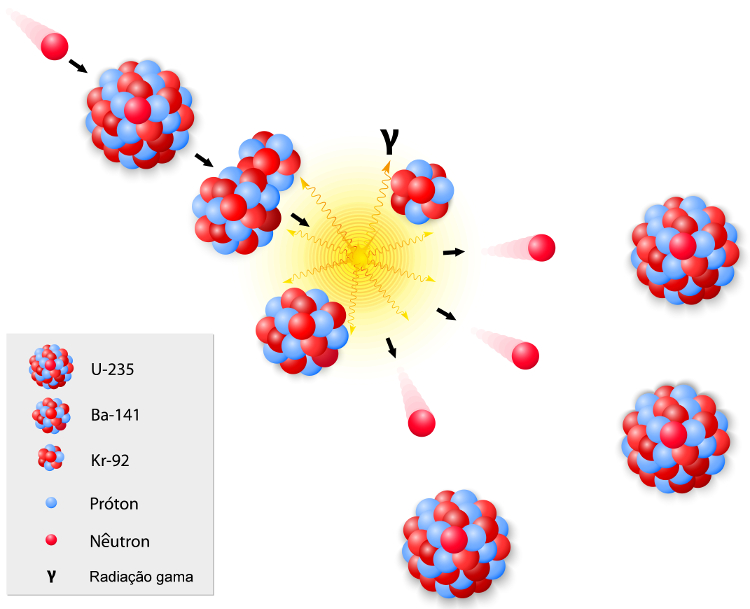

Fissão e Fusão Nuclear
A fissão nuclear, que envolve a quebra de núcleos atômicos, é um fenômeno significativo. Descoberto após a identificação do nêutron em 1932, os cientistas exploraram a possibilidade de produzir novos elementos bombardeando núcleos grandes, como o urânio, com nêutrons.
No entanto, a compreensão prática da fissão nuclear só foi alcançada em 1939, quando Meitner e Frisch cunharam o termo e esclareceram anomalias na formação de elementos durante esse processo.
A fissão nuclear libera enormes quantidades de energia, comparáveis à queima de grandes quantidades de óleo diesel. Essa reação pode resultar em diversos elementos químicos, como bário, criptônio, lantânio e molibdênio, sem seguir uma ordem específica de formação.
A instabilidade nuclear é explicada pela relação entre o número de nêutrons e prótons (N/P) no núcleo atômico. O átomo mantém sua estabilidade quando a relação N/P está dentro de limites específicos, mas além disso, torna-se instável, permitindo a ocorrência de reações nucleares, como emissão de partículas alfa, beta, captura de elétrons e fissão espontânea.
A fissão nuclear tem diversas aplicações, incluindo a geração de energia em usinas nucleares. No entanto, é crucial controlar essa reação para evitar acidentes, como o desastre de Chernobyl em 1986.
A fusão nuclear, que envolve a união de dois átomos com a liberação de enorme energia, é explorada como uma fonte de energia limpa. Projetos, como o ITER na França e iniciativas chinesas, buscam realizar a fusão controlada para gerar energia de maneira mais sustentável.